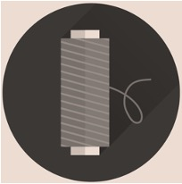

Timeline
The History of Sewing
-

Late 18th Century
Hand Sewing to Machinery?
The principles for machine sewing declared in 1790 by the Englishman Thomas Saint, who patented a machine for sewing leather.
-

Early to Mid 19th Century
Machine Starts to Evolve
In 1846, innovations from previous attempts at creating machines were combined all into one greater machine, built by Elias Howe of Massachusetts. This was the first notable sewing machine, though it could only sew straight seams of a restricted length.
-
Mid to Late 19th Century
Machine makes Major Advances
The first sewing machine with an overhanging arm was invented by Isaac M. Singer, in 1851. This machine made it possible to sew any part of a piece of material. Singer also created the ‘spring-equipped presser foot’- used to hold down fabric while sewing.
-
Today
Machines & Hand Sewing of Present
Today, machines can sew through several materials like, denim, silk, and even leathers. There are now machines for various types of stitching, for example: featherstitching, hemstitching, and quilting.